Overview
Parallax Occlusion Mapping (POM) and Offset Bump Mapping (OBM) are similar to how Tessellation and Displacement is set up but not quite as expensive.
As a result it can be considered for use more often but due to the way in which it works POM will not always be suitable for every situation (exampled below).
Generally, POM is used on flat ground surfaces like concrete roads since the silhouette does not change, cylindrical objects also look good in some cases.
However, if you want to have an obvious silhouette change and the object will be noticeable to the player then one of the Tessellation schemes or Silhouette POM - Shader Generation Params would be a better option.
Parallax Occlusion Mapping vs Offset Bump Mapping
POM is for PC on High or Very High spec only. OBM for anything else (Low/Medium spec), including consoles.
For assets that should use POM, please enable both shader options in the material and tweak the parameters accordingly.
The engine will automatically fall back to OBM on configs that cannot run POM.
Shader Parameters
The Material Editor Legacy has a Heightmap texture slot which is where you set your _displ texture to. This was added to simplify the workflow and give more control over assets.
A Bumpmap texture is still required to use a displacement texture but they no longer need to be in the same folder or have the same name prefix.
Here's an example of an asset successfully using textures from 4 different folders:
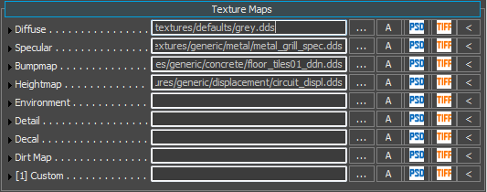
Once Parallax Occlusion Mapping is enabled in the Shader Gen Params, the following options will become available in the Shader Params:
Shader Param | Description |
|---|---|
Height Bias | Allows you to move the plane from where the displacement is applied. |
POM Displacement | Set the POM depth. A larger value will yield more depth. |
Self Shadow Strength | Allows you to change the strength of the self shadowing. The higher the value, the more self shadowing will be present. |
POM Displacement
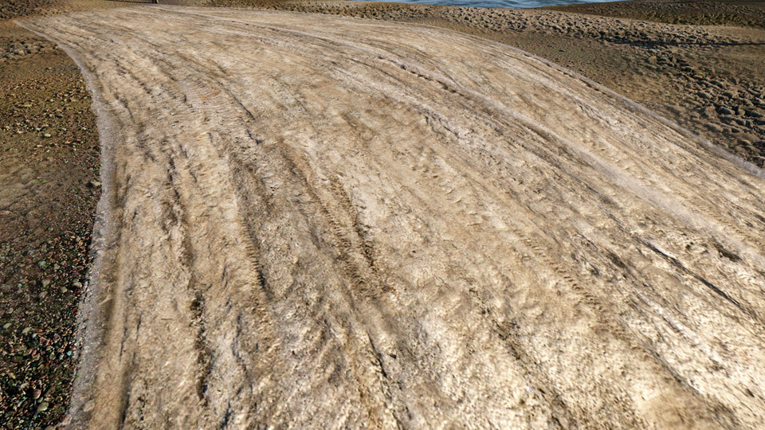 | 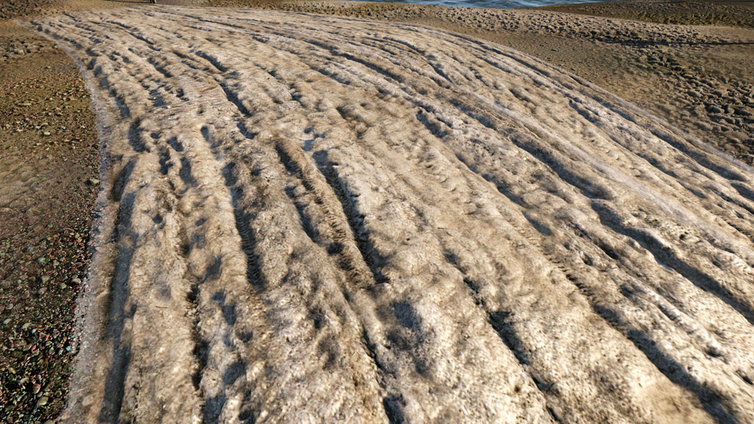 | 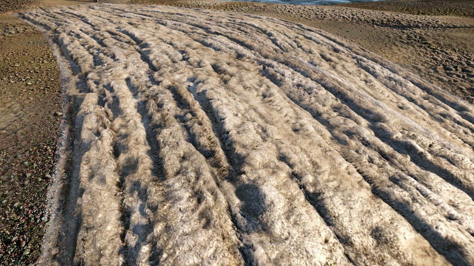 |
| POM Displacement 0 | POM Displacement 0.03 | POM Displacement 0.05 |
|---|
Self Shadow Strength
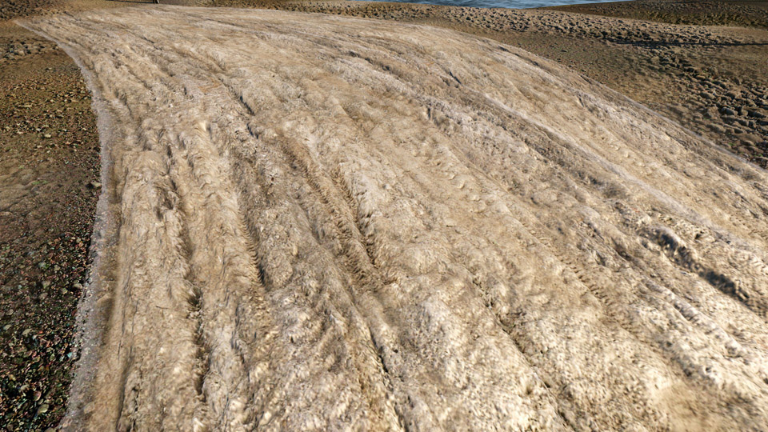 | 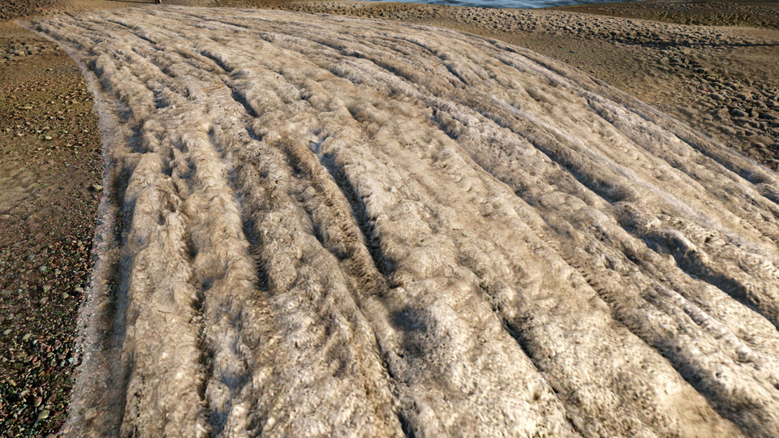 | |
| Self Shadow Strength 0 | Self Shadow Strength 3 | Self Shadow Strength 5 |
|---|
Blend Layer Use
For regular POM/OBM materials set Diffuse and Normal map as usual. The _disp texture will be loaded automatically as long as the above steps are completed.
To use a Blend Layer, tick the Blendlayer box in the Shader Generation Params. In combination with the Parallax occlusion Mapping checkbox being checked (see above), the Texture Maps section will now have the following options: 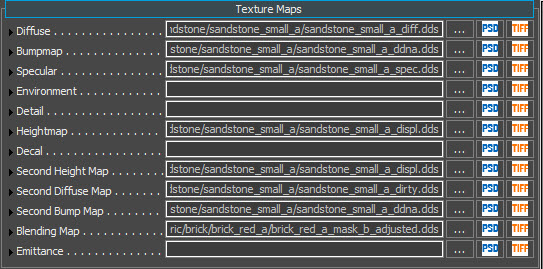
For use with a second Blend Layer, your blend Height Map goes into Second Height Map, the blend Diffuse Map goes into Second Diffuse Map, the blend Normal Map into Second Bump Map.
Tips and Tricks
- Height maps have to be explicitly stored using the _displ suffix, i.e. road_displ.tif.
- Do not attach the height map as an alpha channel of the normal map. Using the alpha channel of the normal map has been deprecated and will no longer work. Save the displacement map in the alpha channel of your _displ texture. The RGB channels can thus be left empty.
- You must save your _displ texture using the CryTIF Photoshop plugin. The will write the correct meta data onto a .tif file for it to be converted to a .dds at run-time. In some cases you may need to click 'Generate Output' in the CryTIF dialog.
- When saving in CryTIF use the DisplacementMap preset to store _displ textures. Height maps will be converted to BC4 textures. If you don't see any displacement, double check the format in the Editor's texture file dialog preview. If it isn't BC4 fix the preset, save and reload.
- Ensure you are in High or Very High graphics spec.
Graphical Artifacts
Silhouette Artifacts
While the upside of POM is that it's relatively cheap on performance, it does have a downside of artifacts being presented when visualized on certain angles. This was the main factor behind Silhouette POM's (Pixel Accurate Displacement Mapping) creation.
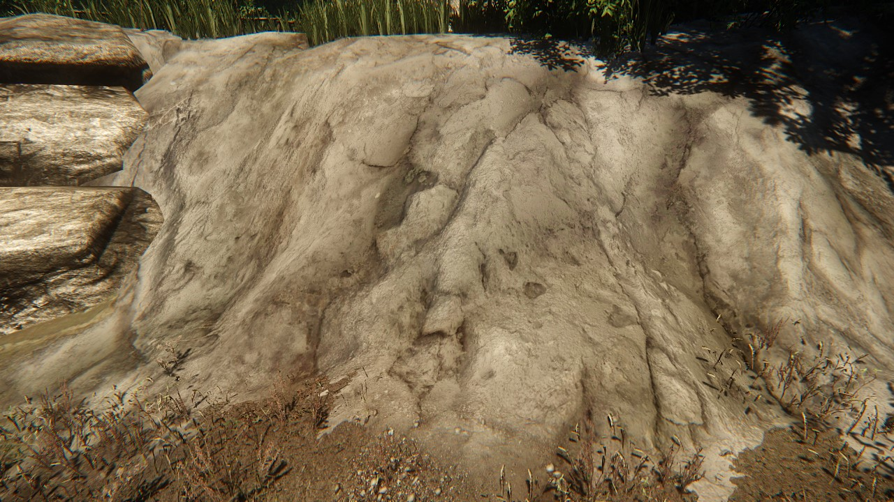 | 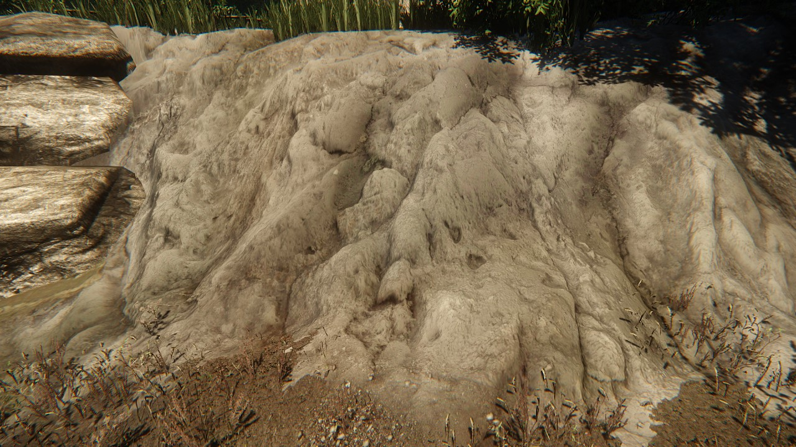 | 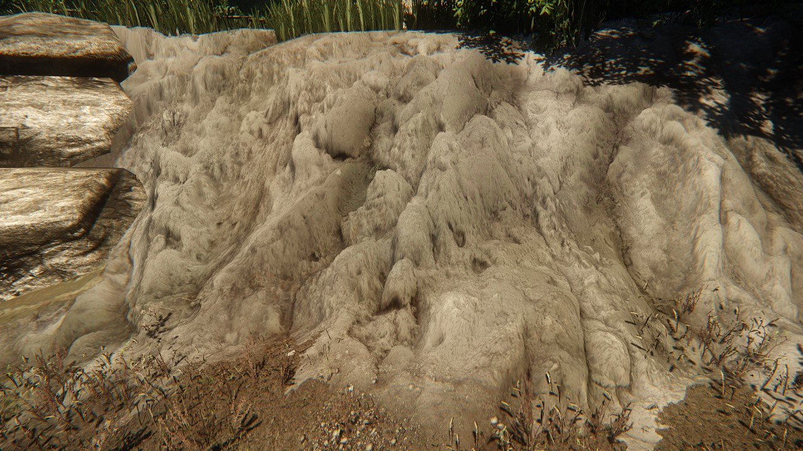 | |
| Front: POM Displacement 0 | Front: POM Displacement 0.01 | Front: POM Displacement 0.03 | Front: POM Displacement 0.05 |
|---|---|---|---|
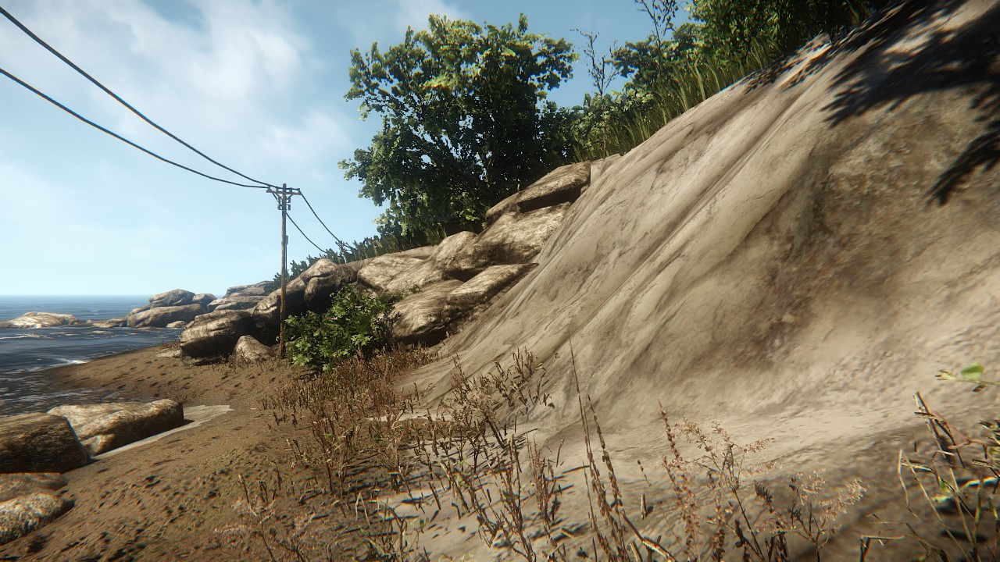 | 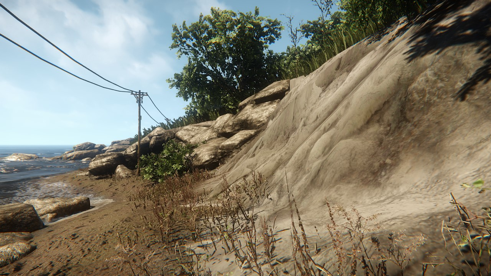 | ||
| Side: POM Displacement 0 | Side: POM Displacement 0.01 | Side: POM Displacement 0.03 | Side: POM Displacement 0.05 |
As you can see, from the front, it looks great maxed out at 0.05 displacement! However, when viewed from the side angle, the artifacts very noticeable. This will occur on any object that uses POM, not just terrain.
It comes down to level design (masking these issues with other objects, blocking the player from reaching these angles of approach), lighting conditions and restraint when it comes to how much displacement to apply to your textures, if you wish to keep this unnoticeable.
Incorrect Height Bias
Strange darkening in certain areas on surfaces using POM (like in the image below) are due to receiving shadows as the surface displacement is taken into consideration (for all deferred effects like shadows, SSAO, AA, etc).
Please note that this is not POM self shadowing. The problem can be alleviated by adjusting the height bias in the material's shader parameter section. 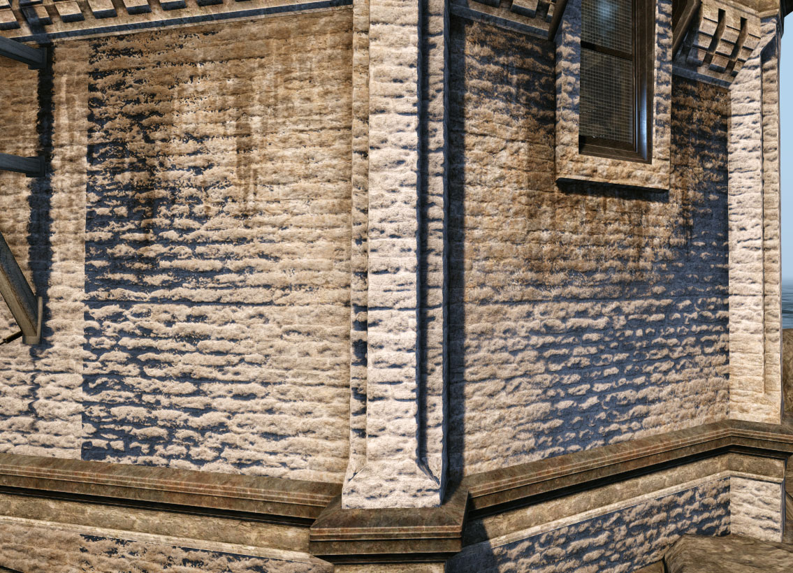